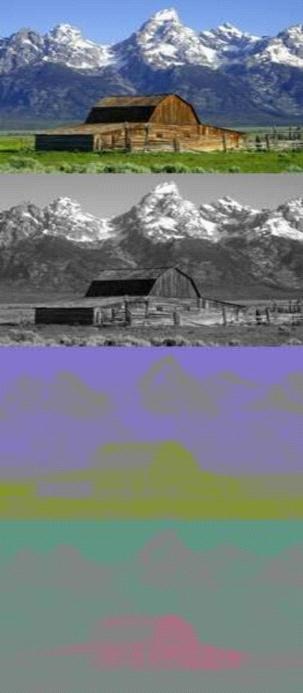

失控
黑白图像的每个像素只需要一个幅值表示其亮度即可，而彩色图像的每个像素至少需要三个值来表示其亮度和色度。所谓色彩空间就是表示彩色图像的亮度与色度的方法。常见的色彩空间包含RGB和YUV色彩空间，每个色彩空间通过不同的像素格式来存储图像。
定义
像素格式描述了像素数据存储所用的格式，定义了像素在内存中的编码方式。YUV和RGB为两种经常使用的像素格式。
RGB和YUV都是像素颜色编码方法，用于表示颜色，两者可以相互转化。FOURCC网站给出了RGB和YUV两种格式的详细技术指南。
FourCC：Four-Character Codes，代表四字符代码。它是一个32位uint_32的标示符，通过串联四个ASCII字符创建而成的，是一种独立标示视频数据流格式的四字符代码。每种YUV格式都指定了一个FOURCC码，它是视频播放软件通过查询FOURCC代码，并且寻找与FourCC代码相关联的视频解码器来播放特定的视频流。
YUV
YUV概念
YUV(亦称YCrCb)是指将亮度参量Y和色度参量U/V分开表示的像素格式，主要用于优化彩色视频信号的传输，使其向后兼容老式黑白电视。UV像素格式来源于RGB像素格式，通过公式运算，YUV三分量可以还原出RGB，YUV的三个分量具体含义如下：
Y表示亮度(灰度值)，通过将RGB信号的特定部分叠加到一起来创建。U/Cr表示色调，反映了RGB输入信号红色部分与RGB信号亮度值之间的差异。V/Cb表示饱和度，反映的是RGB输入信号蓝色部分与RGB信号亮度值之同的差异。
YUV将亮度信息Y与色彩信息U/V分离，没有U/V信息一样可以显示完整的图像，只不过是黑白的，这样的设计很好地解决了彩色电视机与黑白电视的兼容问题。并且，YUV不像RGB那样要求三个独立的视频信号同时传输，所以用YUV方式传送占用极少的频宽。

YUV采样
YUV码流的存储格式与其采样方式密切相关，主流的采样方式有三种：YUV4:4:4，YUV4:2:2，YUV4:2:0。
以黑点表示采样该像素点的Y分量，以空心圆圈表示采用该像素点的UV分量，我们来看看这三种采样方式：

其中：
- YUV 4:4:4采样，每一个Y对应一组UV分量。
- YUV 4:2:2采样，每两个Y共用一组UV分量。
- YUV 4:2:0采样，每四个Y共用一组UV分量。
我们以八个临近像素为单位来分析下这三种主流的采样格式，假设四个像素的YUV分量分别如下：
[Y0U0V0][Y1U1V1][Y2U2V2][Y3U3V3][Y4U4V4][Y5U5V5][Y6U6V6][Y7U7V7]1、YUV 4:4:4
YUV 4:4:4三个信道的抽样率相同，因此在生成的图像里，每个像素的三个分量信息完整(每个分量通常8比特)，经过8比特量化之后，未经压缩的每个像素占用3个字节。采样后八个像素的YUV分量如下：
[Y0U0V0][Y1U1V1][Y2U2V2][Y3U3V3][Y4U4V4][Y5U5V5][Y6U6V6][Y7U7V7]采样后，八个像素总共占用8Y+8U+8V=8×3=24个字节。
2、YUV 4:2:2
YUV 4:2:2每个色差信道的抽样率是亮度信道的一半。对非压缩的8bit量化的图像来说，每个由两个水平方向相邻的像素组成的宏像素需要占用4字节内存。采样后八个像素的YUV分量如下：
[Y0U0V1][Y1U0V1][Y2U2V3][Y3U2V3][Y4U4V5][Y5U4V5][Y6U6V7][Y7U6V7]采样后，八个像素总共占用8Y+8×0.5U+8×0.5V=8×3*2/3=16个字节。
3、YUV 4:2:0
YUV 4:2:0并不是说没有V分量，而是指对于每一个行，只有一个U或者V分量。相邻的扫描行存储不同的色度分量，如果一行是4:2:0的话，下一行就是4:0:2，再下一行是4:2:0…以此类推。采样后八个像素的YUV分量如下：
[Y0U0V5][Y1U0V5][Y2U2V7][Y3U2V7][Y4U0V5][Y5U0V5][Y6U2V7][Y7U2V7]采样后，八个像素总共占用8Y+2U+2Y=8×3*2/4=12个字节。
YUV格式
YUV存储格式有两大类：打包(packed)格式和平面(planar)格式。
- Planar YUV Formats：使用三个数组分开存放YUV三个分量，每个数组分别存储所有像素点的Y、U、V分量。
- Packed YUV Formats：YUV分量存放在同一个数组中，通常是几个相邻的像素组成一个宏像素(macro-pixel)，每个像素点的Y、U、V是连续交错存储的。
根据上面的两种存储格式，可以形成很多种YUV存储方式。有关Packed YUV Formats和Planar YUV Formats列表可以参考FOURCC YUV pixel formats。
下面我们简要介绍下YUV422的几种存储格式：
1、UYVY Packed YUV Format
UYVY是YUV 4:2:2采样方式的一种存储格式，其FOURCC码为0x59565955。水平方向上每两个像素作为一个宏像素，第一个像素采集YUV三个分量，第二个像素只采集Y分量。其存储格式如下：
[U0][Y0][V0][Y1][U2][Y2][V2][Y3]U4][Y5][V4][Y5]按照UYVY格式，每个宏像素32位，每个像素16位。
2、YV16 Planar YUV Formats
YV16是YUV 4:2:2采样方式的一种存储格式，其FOURCC码为0x36315659。其存储为三个二维数组：
[Y0,0][Y0,1]...[Y0,m−1]...[Yn−1,0][Yn−1,1]...[Yn−1,m−1]
[U0,0][U0,2]...[U0,(m−1)/2]...[Un−1,0][Un−1,2]...[Un−1,(m−1)/2]3、YUV422 Sem-Planar YUV Format
这种格式混合了Packed和Planar两种格式，其存储为两个二维数组：
[Y0,0][Y0,1]...[Y0,m−1]...[Yn−1,0][Yn−1,1]...[Yn−1,m−1]
[U0,0][V0,0][U0,2][V0,2]...[U0,(m−1)/2][V0,(m−1)/2]...[Un−1,0][Vn−1,0][Un−1,2][Vn−1,2]...[Un−1,(m−1)/2][Vn−1,(m−1)/2]RGB
RGB色彩空间通过三原色（R、G、B）来表示图像。常见的RGB格式包含RGB24、ARGB32等。
RGB24
RGB24是24位的颜色值，高八位为R、中间八位为G、低八位是B。
ARGB32
ARGB32是32位的颜色值。高八位为A，次八位为R，再次八位为G，最后八位为B。
YUV/RGB in Action
FOURCC YUV to RGB Conversion给出了YUV和RGB相互转换公式。同时，Windows开发人员也需要详细阅读[Video Rendering with 8-Bit YUV Formats](https://msdn.microsoft.com/zh-cn/library/aa904813：
本文讲述了在 Microsoft Windows 操作系统中呈现视频时推荐使用的 8 位 YUV 格式。本文讲述了可用于在 YUV 格式和 RGB 格式之间进行转换的技术，还提供了用于对 YUV 格式进行上采样的技术。本文适用于在 Windows 中使用 YUV 视频解码或呈现的所有人员。
有关RGB/YUV视频像素数据的处理方法可以参考雷霄骅-视音频数据处理入门：RGB、YUV像素数据处理
参考